Meet the Wedding Party
We love our crew. We think you will too!
Brooklynn
Matron of Honor
Brooklynn and Jess first met working in catering & special events at Kings Island about 10 years ago, working through all hours of the day and night to deliver events that were both beautiful and incredibly fun. Their connection was instant, and they quickly became inseparable. From spontaneous road trips to deep late-night conversations, Brooklynn has been a Jess's best friend and confidante. Brooklynn's infectious laughter and unwavering support have been a constant source of joy.
JB
Best Man
JP has known JB for as long as he has been alive. And yes, JP is younger, but he is also taller. From the countryside to the city they grew together helping each other, though the process required one of them to break his leg and the other to loose money to a train station scam. Live and learn.
Lauren
Bridesmaid
Lauren is not only Jess's sister but also one of her favorite people in the world. Their relationship has been a cornerstone of the Jess's life, marked by cherished traditions and an obscene number of Insta Reels they send each other at all hours of the day or spending HOURS running dungeons on Elder Scrolls Online. Lauren's humor and wit, coupled with her incredible empathy and strength, has made her an irreplaceable part of Jess's life.
Luc
Groomsman
Luc and JP shared a childhood, "sharing" being the key word - their parents don't remember any time where they fought for toys. They also shared in many activities growing up: violin, capoeira, rowing, wrestling with JB... Now separated by an ocean they still connect through their shared interests in games, programming, and the weirdness of life and society.
Ashley
Bridesmaid
Ashley is one of Jess's very first friends. Growing up across the street from each other, these two have a bond that few others share -- they are true childhood friends. From playing Barbies & Polly Pockets to running through sprinklers and other neighborhood shenanigans, Ashley has been a consistent voice of love and support throughout many phases of their lives.
Matt
Groomsman
Matt and JP first met as strangers in the Aldebaran Atelier in Paris and nerded out over robot User Experience. Jump forward about a year in the San Francisco office kitchen, and as JP gets his cereal he hears an Australian accent: "excuse me but, have we met?" From SF to Paris to Boston to Tokyo, they kept nerding out and imagining the future.
Kyla
Bridesmaid
Kyla and Jess first crossed paths in high school, but it was during college that their friendship truly blossomed. With a shared love for music, their connection deepened as they bonded over their favorite tunes and concerts. Kyla's enthusiasm and musical talent have always been a source of inspiration for Jess. Kyla's vibrant energy and thoughtful support have made her a cherished friend. Her presence adds a special note (ba dum tss) to this celebration, and Jess is thrilled to have her as a bridesmaid.
Nicolas
Groomsman
Nicolas is the reason JP now prefers working on MacOS, it only took a couple of years of convincing. More importantly, Nicolas and JP have been colleagues and friends for 10 years, and took the jump over the ocean and toward the US together.


 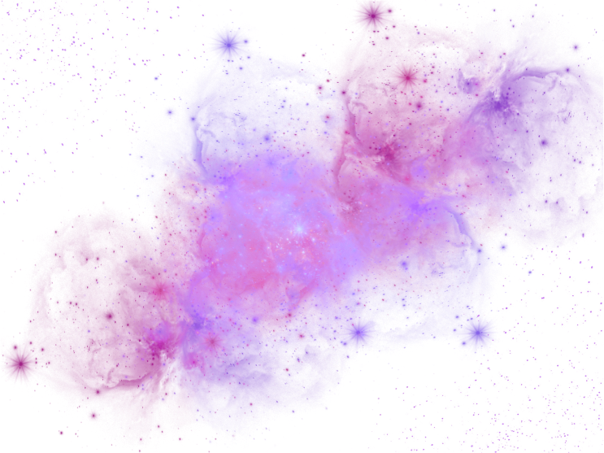
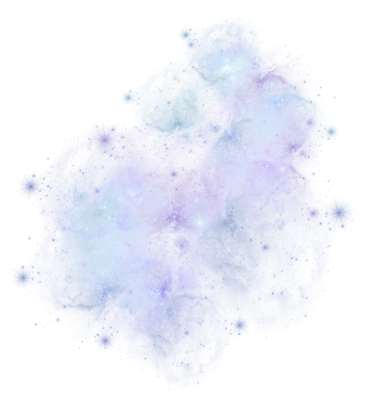
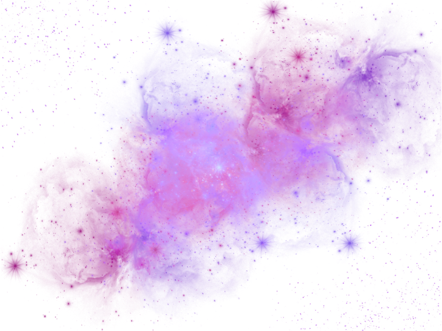
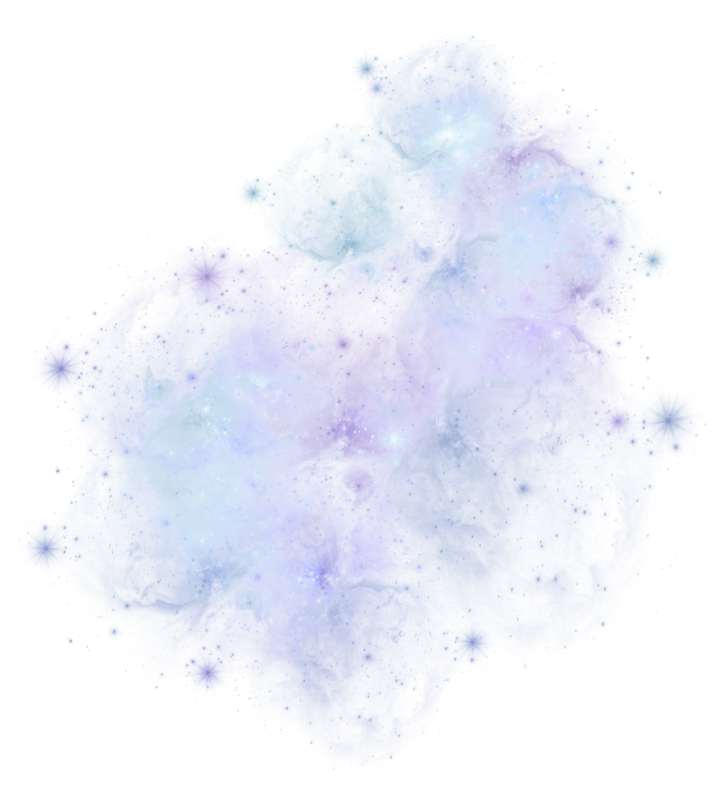